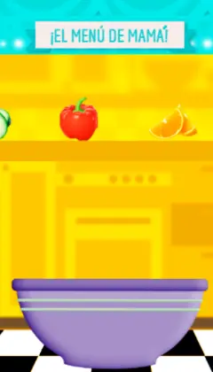
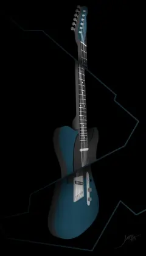

Hi. I'm Jose Alcaraz
Husband, father, and electronic engineer with about a decade of experience in frontend dev, who loves helping people around the world through technology and arts. Welcome_
StartHow pixel art, fixing toys and video games turned into code.
I discovered computers at six, using Microsoft Paint to recreate characters from the video games and animated series I loved. By the time I built my first web game, I knew this was my path. Since then, I've also worked across back-end, cloud, Android, and iOS dev.
Skills AI-fluent • TypeScript • Front-end tools • Git
See visual art projects
Food Drag n' Drop
An HTML5 drag-and-drop game.
Drawing, illustration and animation: from napkins to computers.
As kids, my brother and I used to draw together on napkins every day. The habit remains, though the tools have changed.
Skills Pen & paper • Bitmap/vector • Video editors
Check out some music
Pixel Landscape
A detailed pixel art landscape created with Aseprite, exploring depth through color palettes.
"Entrenando Paz": a wild and meaningful music journey.
Music has always been part of my life, and I keep cultivating it in good company, in the service of others. Lately, I've been diving into songwriting and composition.
Skills Guitar • Piano • Digital Audio Workstations
See what I've sharedLet's build something together.
jose.david.alcaraz7@gmail.com_